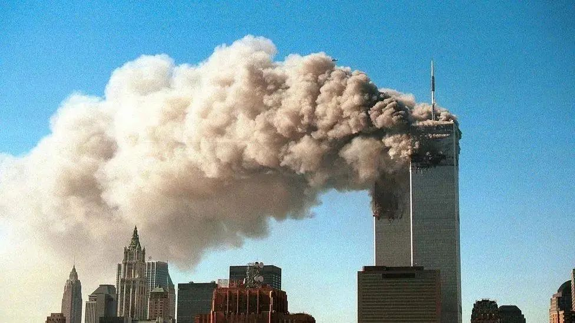
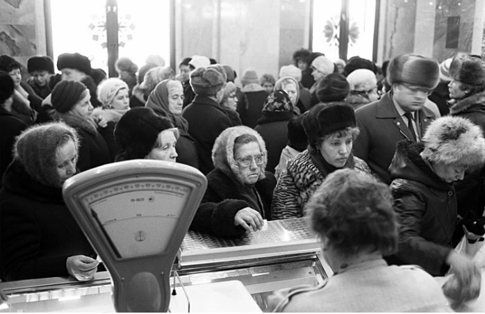
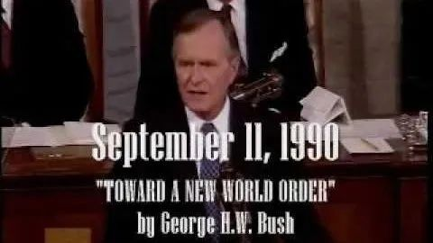
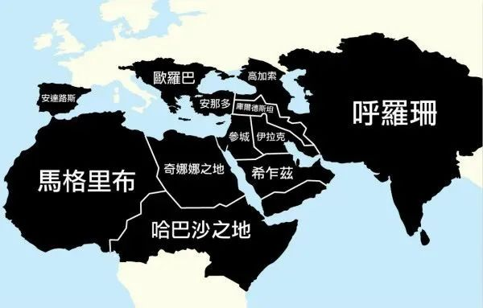

收录于合集

作品简介
作者： 殷之光，英国艾克赛特大学副教授，英国艾克赛特大学全球中国研究中心主任
来源： 《文化纵横》2016年6月号，欧亚系统科学研究会摘编
原标题： “世界新秩序”的神话：恐怖主义下世界的失语症
导读
2021年恰逢冷战结束三十周年和911事件二十周年。如果说，冷战的结束使一大批人坚信历史已经终结，911事件则彰显美国主导的“世界新秩序”正不断遭受攻击。本文指出，美国的普遍主义霸权秩序意外推动了它的对立面：以伊斯兰宗教认同为中心的另一种普遍秩序的反抗。其表现就是美国的反恐战争“越反越恐”、甚至西方社会内部也成为滋养极端宗教分子的土壤。 围绕恐怖主义的话语，往往以二元论世界观和自我与他者的认同差异为基础，它带来三个后果：其一，无论批评哪种霸权秩序，都不可避免陷入道德相对主义困境；其二，非此即彼的身份认同，令世界陷入“失语”境地；其三，理想与实用之间的双重标准，反过来削弱了普遍主义平等理想本身。 这些分析不仅适用于美国，也同样适用于以反美为合法性论据的“政治伊斯兰”。在反恐与反干涉话语相互交织的今天，我们尤其要警惕陷入任何一种“普遍秩序”的话语陷阱中。欧亚系统科学研究会特编发此文，供读者思考。文章仅代表作者本人观点。
正文
今天的世界被诸多普遍主义叙事及其政治行动笼罩。
2016年4月25日，阿富汗总统阿什拉夫·加尼在国民议会发表的演讲。演讲中，加尼将塔利班武装称为谋杀犯。加尼表示，他不再希望能够通过巴基斯坦斡旋与塔利班进行谈判。阿富汗国民安全部队将会直接着手打击包括伊斯兰国、基地组织和塔利班在内的军事组织。加尼的演讲是近些年来阿富汗政府对塔利班等伊斯兰军事武装势力最强硬的一次表态。这也引起了来自塔利班方面的强烈反应。4月26日，阿富汗伊斯兰酋长国（即阿富汗塔利班武装政权）发言人卡里·约瑟夫·艾赫迈迪（Qārī Muhammad YusufAhmadī）在塔利班官方新闻网站shahamat上发表了一篇讲话稿，回应加尼。 正如几乎所有“政治伊斯兰”（Political Islam）话语一样，讲话中，艾赫迈迪采用了二元论修辞方式，将阿富汗联合政府与塔利班之间的对立视为穆斯林与“异教徒”之间的本质冲突。 然而，更有趣的是，在其讲话开头，他将这种身份政治的冲突放在了一条两种世界秩序的历史对抗线索下。他认为，美国对阿富汗的入侵是一条漫长世界历史线索中的第三阶段。在他看来，这条相互冲突的世界历史开始于11世纪中期，即十字军东征时期。这条线索的主轴是西方对“伊斯兰世界乌玛（Ummah）秩序的不断攻击”。其目的是为了“压制、奴役”穆斯林世界，并对穆斯林黄金时代所取得的势力影响进行反扑。
从艾赫迈迪的表述中，我们可以看到， 伊斯兰乌玛不但被理解为一种超世的道德理想，也是一种现世的政治秩序。它与其它诸种普遍主义世界观之间，通过政治与军事冲突，争夺对世界政治秩序合法性以及世界历史叙述的解释权利。 这种秩序冲突被称为西方“对伊斯兰的战争”。而由于伊斯兰乌玛是一种终极性的普遍性秩序，是人类历史发展的必然终点，因此这条对抗性的主线可以被用来理解整个世界历史的发展。
艾赫迈迪将这种对抗的历史分为三个不连续的阶段。第一阶段从11世纪中期到13世纪末期，这段时期的历史被十字军东征所主导。第二阶段开始于18世纪，这一到20世纪中期结束的阶段被“帝国主义战争”所主导。有趣的是，艾赫迈迪将冷战时期“东方阵营”视为阻挡西方直接入侵的堡垒。随着苏联的解体，老布什政府开始推行“ 世界新秩序 ”（New World Order），穆斯林与西方冲突的历史随着美国2001年入侵阿富汗，开始了其第三阶段。这种建立在穆斯林身份认同上的历史主义叙事，构成了“政治伊斯兰”号召力的基础之一。它用“我们”对抗“他们”这种身份政治的逻辑去理解整个人类历史，用这种二元论的框架去重述世界的历史、现在以及未来。
01
“反恐战争”定义下的“恐怖主义”
今天围绕“恐怖主义”产生的一系列话语充分体现了二元论世界观的深刻困境。 而这类讨论的产生，则伴随着上世纪末第三世界社会解放运动的衰落，以及新自由主义全球化浪潮的兴起。在今天“反恐战争”语境中，“恐怖主义”被视为一种癌症。是与这个现代世界格格不入的反现代者。但同时，它仿佛又是一个当代历史的创造物，它伴随着2001年9月11日世贸大厦倒塌的灰烬“产生”于世界媒体面前。这一极具标志性的诞生故事又将“恐怖主义”与“伊斯兰”紧密连接在一起。911事件在这一叙事中有着不可忽略的重要象征意义。无论是在袭击者还是被袭击者眼里，世贸大厦都象征着21世纪新自由主义世界秩序的金融核心。2004年1月4日半岛电视台阿语频道中披露的奥萨马·本·拉登的著名“教令”则更加确认了这种象征意义。本·拉登将这场针对西方世界的“圣战”称为一场“我们对抗他们”的“宗教- 经济战争”。而他本人，也变成了21世纪这种对抗中，来自世界资本主义秩序边缘地带人们最无奈的象征性符号。本·拉登的头像被制成文化衫、招贴画、甚至手机屏保，肆无忌惮地出现在蒙巴萨、尼亚美、泗水、白沙瓦、里约热内卢、卡拉卡斯的街头。他所代表的这股粗暴的力量，甚至被当作对抗美国霸权的另一种“超级大国”，在那些被新自由主义世界秩序遗忘的边缘野蛮生长。
与世界“边缘地带”出现的这种狂热相对的，是在今天世界秩序“中心”对“恐怖主义”以及“政治伊斯兰”徒劳的规训。911之后开始的“反恐战争”时至今天已经进行了15年。本·拉登也在2011年被正式宣告击毙。 然而，受到这一政策直接影响的西亚与北非地区却并未因此而平静。 相反，随着“反恐战争”从阿富汗蔓延到伊拉克之后，一股被称为“伊斯兰国”的力量却悄然兴起。在几乎被清缴殆尽的伊拉克复兴党与基地组织的基础上，在伊拉克与叙利亚破碎的领土上，建立起了一个试图实践“伊斯兰”政治理想的政权。这当然并非是“政治伊斯兰”力量第一次展现他们的建国理想。本文开头谈到的阿富汗伊斯兰酋长国则早在上世纪末，苏联从阿富汗撤军之后便开始尝试建立起一个民族政府。然而，在面对这两种挑战的时候，美国作为“反恐战争”的发起者与主导者，却并没能提供一种前后一致的可靠判断。 “反恐战争”中最臭名昭著的是保守主义者从国家利益出发，对双重标准的运用。 最近的一次案例是美国白宫发言人舒尔茨（Eric Shultz）在2015年1月28日答记者问时，将塔利班定性为“armed insurgency”(武装叛乱)。与之相对的是被定性为“terrorist group”（恐怖组织）的“伊斯兰国”。
虽然与“伊斯兰国”所设想的世界帝国不同， 但塔利班这种建国理想以及同西方“帝国主义”世界秩序对抗的强烈态度，则可以被看作是一种在穆斯林世界中从19世纪末便开始的一场连续性变革中的一个部分。 但是，在“反恐战争”背景下对“政治伊斯兰”的叙述却试图将其历史描述为一种特殊的、少数的情况。除了“政治伊斯兰”这一概念之外，西方知识体系还创造出了诸如“伊斯兰主义”和“伊斯兰原教旨主义”等一系列词语，试图将这种穆斯林的政治参与和激进的对抗情绪规训到某种特殊范畴内。由此希望表明其与“正统”宗教信仰的差异。而在“政治伊斯兰”话语内部，这种行动却像是一种“西方帝国主义的宣传”策略，旨在消磨穆斯林坚定的“斗争意识”。
同样，今天对“反恐战争”的批评也被一种相对主义所笼罩。体现这种态度最著名的表述就是“你的恐怖分子是我的自由斗士”（your terrorist is my freedom fighter）。这句起源于西方流行文化中的虚无主义自白有许多变种。在公众对“反恐战争”的讨论中，许多美国左翼中间对里根时代以来美国外交政策的批评，几乎都陷入了这种道德相对主义的立场之中。与来自伊斯兰话语内部那种简单粗暴，但却充满全球野心的历史主义叙述相比，无论是左翼自由主义者，还是以国家利益为核心的保守主义者们的陈述都显得苍白无力。于是，911之后的世界秩序似乎走向了一个困境。一方面，以政治伊斯兰为代表的对新自由主义世界霸权的反抗，以反现代的暴力方式建立一种以“伊斯兰”为中心的新霸权秩序。另一方面，在“反恐战争”的语境下进行的战争行动，则从一开始便继承了老布什时代美国在全球推行的“世界新秩序”霸权。

2001年9月11日，世贸双子塔倒塌标志美国全球反恐时代到来。图源：getty image
02
阶级叙事中的政治伊斯兰
正如其理论家与吹鼓手们阐述的一样，“政治伊斯兰”——或者更确切的说是以西方中心主义为敌人的圣战观念——的确产生于19世纪中晚期殖民主义世界扩张的政治现场中。然而，
我们也同样需要注意，与这种以穆斯林认同为中心的世界秩序叙述同时产生的，还有一种以阶级认同为基础的国际主义理想
。而在这种理想基础上建立起的苏维埃政权，则对包括大伊斯兰主义（pan-
Islamism，今天也译作泛伊斯兰主义）在内的诸多影响了20世纪世界政治格局的许多普遍主义政治话语都进行了积极的批判。在20世纪，这种理论批判也建立在共产国际从支持去殖民独立与民族平等运动，到反法西斯的世界革命实践基础上。
**也正是在这种变动中的世界革命现实需要下，共产国际对“政治伊斯兰”的反帝行动做出了基本批判。
**
从这种以阶级联合为基础的普遍主义理想出发，列宁将俄国与土耳其境内兴起的“大伊斯兰主义”定义为“利用反欧美帝国主义的解放运动来巩固可汗、地主、毛拉等地位”的政治活动。在阶级认同基础上对大伊斯兰主义进行的批判并不是孤立的两种认同话语的冲突。它还伴随着一系列重要的政治行动。首先，在一个反对阶级压迫、殖民与财政奴役的政治前提下，对世界范围内民族平等的强调和对狭隘民族主义的批判，构成了列宁对大伊斯兰主义批判的基础。大伊斯兰主义被视为一种狭隘民族主义的相似物。同时，这种批判的前提还包括“世界各国和各民族的无产阶级和全体劳动群众资源追求联盟和统一的愿望”。此外，在这个世界阶级联盟中，平等是以“消灭阶级”为最终目标的政治实践。
列宁这种在阶级平等理想下对民族自决的强调和对狭隘民族主义/大伊斯兰主义等的批判，在中国的共产主义革命实践中也得到了体现。虽然，在中国革命的语境下，大伊斯兰主义并未成为一个显著矛盾。但这并不意味着穆斯林这一宗教身份认同在中国革命实践中的缺席。在中国的共产主义革命实践中，对穆斯林群众的争取很大程度上被包含在统一战线和民族工作两个互通的线索内，并建立在国际层面的独立自主与和平共处，国内层面的统一与分裂，以及民族身份层面的大汉族民族主义和狭隘少数民族民族主义这三组辩证关系基础上。而这些都离不开共产主义世界理想中，对建设未来世界平等秩序的追求，以及相应的以阶级话语阐释世界过去与当代秩序的雄心。
03
作为后冷战现象的“政治伊斯兰”
20世纪70年代末80年代初，冷战的缓和伴随着阶级话语的退潮，以及共产主义世界革命理想的衰落。而与之相伴的，则是“政治伊斯兰”在世界范围内特别是第三世界内的复苏。一些冷战末期的西方学者为这一现象提供了一个工具主义的阐释。“政治伊斯兰”在第三世界地区的复兴被看作是在苏联强权萎缩后，地缘政治权力真空里“弱国家”（weak state）治理的必然结果。还有一些学者用“文化碎片化”和权力日渐分散来描述后冷战甚至是冷战后期的世界政治格局特色。
显然，在苏联解体之后，老布什所描述的那种“世界新秩序”（New World Order）并未出现。相反，当时在第三世界中早已开始出现了一系列以伊斯兰为意识形态基础的反西方行动。这种以反帝与反金融霸权为口号的行动，随着美国在世界范围内，特别是海湾地区的军事霸权扩张，而日渐具有了鲜明的反美和反西方特色。这种“失序”在2001年9月11日直接影响到了美国本土。讽刺的是，这正是老布什发表著名的“世界新秩序”演讲之后11年。而今天，随着越来越多来自西方世界内部的年轻人也参与到了这种反西方、反资本霸权的对抗活动中，甚至加入“伊斯兰国”并对欧洲本土发动恐怖袭击后，那种将“政治伊斯兰”视为“弱国家”治理结果的逻辑则显得无比脆弱。
上个世纪80年代西方学术体系内部逐渐形成的当代国际关系话语，以及在西方政治语境下形成的对当代世界秩序的普遍主义叙述，在今天的“恐怖主义”威胁面前显得十分无力。而那种在话语层面对“恐怖主义”和“政治伊斯兰”概念规训的失败，也体现了后冷战时期以美国政治霸权为开端的新自由主义全球政治秩序的衰落。 事实上，与其站在“反恐战争”语境内部，试图总结出一个对“恐怖主义”的定义， 不如尝试从历史的动态过程中去理解“政治伊斯兰”作为一种世界秩序的兴起与蔓延。行文至此，阿富汗则再次出现，成为我们理解这一变动过程的象征性事件。
1989年2月15日，最后一任苏军驻阿富汗司令格罗莫夫与其子马克西姆在友谊桥的合影。图源：美联社。
让我们将时钟拨回到1989年2月15日，当地时间上午11:55分。阿姆河上阿富汗- 乌兹别克斯坦友谊桥苏联境内的那一侧插满了红旗。最后一任苏军驻阿富汗司令鲍里斯·格罗莫夫（Boris Gromov）中将从阿富汗一侧过桥，回到乌兹别克斯坦。在桥中央，格罗莫夫中将走下装甲车，步行穿过国境线，“头也不回地”向苏联一侧走来。迎面跑来的，是他14岁的儿子马克西姆。
格罗莫夫中将是最后一名从阿富汗境内撤离的苏联士兵。这天早上，苏联对阿富汗长达9年零50天的武装干涉正式结束。300多名苏联侦察兵，乘着数十辆军车，轰鸣着喇叭，开着车灯，从阿富汗回到苏联边境城市铁尔梅兹。守候在阿姆河乌兹别克斯坦一侧的苏军家属们，在各国记者的注视下，向撤回苏联境内的士兵们献上了他们充满温情的欢迎。苏联国防部还向所有撤回的士兵们赠送了一枚腕表，以表彰他们的英雄事迹。在简短的欢迎仪式上，格罗莫夫中将向记者们表示，“尽管付出了牺牲与损失，我们充分尽到了自己的国际责任。”在莫斯科《真理报》2月16日的报道中，也将撤军描述为士兵们在“尽到了国际主义者责任”后的凯旋。
然而，在在场的其他各国记者的叙述里 ，撤军非但不是一场凯旋，更代表了一种苏联式干涉主义的没落。 在苏联境内，一种类似于美国越战时期出现的那种反战情绪开始蔓延。这种情绪还伴随着对苏联国际主义理想甚至是苏联政治体制的怀疑。新华社对此事件的报道中，意味深长地援引了乌兹别克广播电视台记者加尼耶夫在2月15日庆祝仪式结束时发表的个人感言：“我相信今天的日子将写在我国的历史中。这是一场不应该打的战争。苏联部队在那里死伤５万多人，还有许多战俘没有回来。我们本来不应该去那里，应该由阿富汗人民自己来决定自己的命运。为什么我们要作出那么大的牺牲呢？全部撤军才是唯一的选择。”
04
苏联撤军阿富汗
这一充满了个人主义情怀的评论，似乎很好地呼应了这场奇特的“凯旋”仪式。在庞大的苏联共和国里， 那种曾在理想主义氛围下对共和国战争的神圣性崇敬以及对苏维埃宏大的国际使命的信任，已经渐渐被一种虚无主义侵蚀。 与苏联国防部向所有最后撤出阿富汗的士兵颁发纪念手表的行动相比，在世界媒体眼中——甚至是许多苏联人心中——格罗莫夫毫无留恋地离开阿富汗，并充满感情地拥抱自己儿子的形象，则更好地代表了苏联撤军这一时刻的真正历史意义。与冷战初期那种支持第三世界与殖民地人民独立运动的热情相比，戈尔巴乔夫时代的苏联，关心的是在“新思维”（Perestroika）政策下重振日渐低迷的国内经济。此时苏联人心中更期望看到的是对自身生活与经济发展的回归。 很明显，这一让“阿富汗人民自己来决定自己的命运”的表述与20世纪50年代亚非拉去殖民运动中对“民族自决”概念的使用毫无共同之处。此时的阿富汗对于苏联来说，更像是一个尴尬且沉重的包袱，从戈尔巴乔夫本人到普通苏联老百姓，都希望能够尽快将这个烫手山芋丢开不理。 在1986年6月的政治局会议上，刚上任不久的戈尔巴乔夫便表示“我们必须要从那里撤离”，时任苏联最高苏维埃主席团主席的葛罗米柯也附和道：“这不是我们的战争”。在1987年年初的一次政治局会议上，绝望的戈尔巴乔夫毫无掩饰地将这场战争描述为“前任领导集体犯下的错误”，在他看来，这场“惨重的损失”毫无意义，那些在这场战争中牺牲的“小伙子”死的不明不白。然而，他也同时意识到，如果就此撤军，则会对苏联“在民族解放运动中的威信”形成沉重打击，而且“帝国主义将在第三世界发起攻势”。
然而，失去第三世界的担忧并未阻碍戈尔巴乔夫从阿富汗撤军的决心。在1987年年底访问美国时，他向里根表示， “苏联人是现实主义者”，他们意识到，阿富汗“有太多非社会主义的特色，例如多党制、部落主义、资产阶级以及宗教教士阶层等等”。因此，苏联人“不会考虑将阿富汗人变成社会主义者” 。只要美国减少对阿富汗伊斯兰主义反抗组织的援助，苏联一定会尽快从阿富汗撤军，并且停止向尼加拉瓜出售武器。戈尔巴乔夫强调，纳吉布拉（Mohammad Najibullah）——这个一年前刚刚被苏联扶持上台的阿富汗革命委员会主席团主席——政府将会做出巨大让步，贡献出政府内50%的权力部门，以求能够同反政府力量共同执政。这场旷日持久的战争已经让戈尔巴乔夫及大多数苏共中央政治局中的高层干部们日渐丧失了对世界秩序的兴趣。可以看到，这时期苏联政策内卷化在其“新思维”改革中得到了充分体现。这项改革充满了对苏联内部经济状况的担忧。在这种条件下，继续向“不知感恩”的第三世界（特别是阿富汗）投入大量金钱便愈发显得毫无意义。

戈尔巴乔夫的改革导致苏联经济迅速恶化，商品短缺情况严重，黑市物价疯涨。图为凭票据排队兑换日用品的群众。
图源：（前苏联）塔斯通讯社。
05
作为霸权的普遍主义
在1987年年底的华盛顿峰会中，戈尔巴乔夫向里根提出，由于苏联与阿富汗有2000度英里的共同边界，因此出于苏联国家安全考虑，希望战后阿富汗成为一个不结盟的中立国家。他希望能跟里根进行一个“君子协定”，在苏联从阿富汗撤军之后，美国也能同时约见反对派武装，并停止对他们的援助。然而里根明确表示，这不可能。然而，戈尔巴乔夫的决心之大，即便美国未能同意这一重要条件，苏联在不久之后仍旧开始着手准备撤军。实际上，美国对阿富汗圣战者的军事援助，从苏联最初入侵阿富汗时已经开始。而根据布热津斯基表示，甚至早在苏联入侵阿富汗之前，他便建议卡特总统向当地的圣战者武装提供武器。他认为，这样便能提高苏联武装干涉阿富汗的可能，并把阿富汗变成“苏联的越南”。即便等到1989年苏联真正撤军之后很久，美国对阿富汗反政府武装的援助仍在继续。在1989年2月16日白宫的记者招待会上，里根的继任者乔治·布什表示，在美国看来，虽然苏联已经撤军，但是“阿富汗人民争取民族自决的斗争仍在继续”。美国将会继续向阿富汗的反政府武装提供援助。其目的是为了“不让政府方面在军事上有压倒性优势”。
在上世纪八十年代阿富汗战争时期，越来越多的美国人开始相信，伊斯兰是一种有效的政治武器。 与苏联代表的共产主义世界秩序相比，当时仅仅在局部地区小打小闹的伊斯兰力量看上去“危害”较小。在1979年伊朗人质危机和1983年贝鲁特爆炸案之后，美国的注意力主要集中在“国家资助的恐怖主义”上。在全球范围内确定了：伊朗、古巴、叙利亚、利比亚以及南也门为支持恐怖主义活动的国家。这其中最主要针对的是诸如真主党、伊斯兰号召党（Al Dawa Party）等这类由伊朗支持的什叶派力量。以及类似阿布·尼达尔（Abu Nidal）领导的黑色六月等支持巴勒斯坦独立并反以色列的武装组织。在美国看来，恐怖主义是一种“政治战略密不可分的一部分”。其目的是帮助伊朗、叙利亚、利比亚这些国家实现其政治目的。因此，最有效的对应方式是以这些国家的利益诉求为基础，一事一议。 这种判断实际上来自冷战以来美国在中东地区与共产主义世界秩序、阿拉伯民族主义，以及来自老欧洲的殖民主义对抗的经验。 自1950年代开始，美国中央情报局便在沙特石油公司的协助下，在沙特阿拉伯东部地区的部落里，扶植伊斯兰组织。此外，已知的工作还包括在日内瓦支持穆斯林兄弟会组织，并策划对纳赛尔的暗杀。
这种实用主义的态度在1979年珍妮·柯克帕特里克（Jeane J. Kirkpatrick）的著名长文 《独裁与双重标准》 中得到了很好的表述。柯克帕特里克强调，美国卡特政府时期在第三世界独裁国家中强行推行民主化进程的政策毫无效率。在推翻了那些国家的独裁政府之后，反而助长了强大的反美情绪浪潮。她对“传统的独裁者”和“革命共产主义政权”做出了区分。认为前者并不打破当地居民的生活习惯与社会结构，当地居民也在长期的政治生活中，学会了同独裁者相生相息。因此，没有必要在这类国家中推行民主化改革。而相反，在革命共产主义政权内，大量人由于革命而流离失所，因此，美国有必要对此进行全面控制。柯克帕特里克在里根政府时期担任美国驻联合国常驻大使，她这一明确的强硬保守主义立场也成为后来对美国外交极具影响的基本原则。
这种站在美国国家利益角度出发，对第三世界的干涉政策随着苏联撤出阿富汗而逐渐达到一个高潮。 除了继续再阿富汗地区支持反政府武装之外，老布什政府在中东很快便直接投入了一场以打击伊拉克为目标的战争。1990年9月11日，老布什在国会发表其“世界新秩序”演讲时无比自信地表示，“最近世界局势的发展证明，美国（在全球）的领导地位无可替代”。随着戈尔巴乔夫领导的苏联迅速放弃其全球视野，美国相信，没有人能够再怀疑美国维护全球领导地位的信心与持久能力。此时的美国已经开始了其对伊拉克萨达姆政权的武装干涉。这也是美国自越战以来最大的一次全面军事行动。在短短半年多的打击中，共有约70万美军被送到了伊拉克战场。

老布什总统1990年9月11日在国会发表“世界新秩序”演讲。图源：互联网。
今天来自“政治伊斯兰”的恐怖主义活动恰恰形成于自上世纪70年代末80年代初的世界秩序变迁过程中。 随着苏联的政治影响及其共产主义世界观的退潮，以及美国中心主义的世界霸权的扩张，以“政治伊斯兰”为代表的一系列以民族或宗教认同为基础的中心主义开始在第三世界兴起。而随着2011年阿拉伯世界动乱而开始的欧洲难民危机，我们也发现，那种列宁所批判的“精致的民族主义”也开始在第一与第二世界复苏。他们或者将自己包装为对“自由”与“平等”的高尚追求者，或者称自己为反抗霸权的斗士。然而，这种面目模糊的“自由”与“平等”正像新自由主义者对“民主”的策略性使用一样，其背后是一种在普世话语包装下的中心主义霸权。在这种霸权主义逻辑下推导出的国家/民族利益，其核心只能是自利的、反国际主义与不平等的。随着2003年小布什政府开始第二次海湾战争，美国的现实主义者便开始对这种新自由主义的干涉政策提出了强烈批评。米尔斯海默曾经直截了当地将第二次海湾战争称为一场完全不符合美国国家利益的“多余的战争”。在一份集合了当代美国最重要的33名现实主义国际关系学者的签名倡议书中，米尔斯海默等人强调，在针对基地组织而进行的“反恐战争”背景下，美国应当通过联合国等非武力外交手段，对伊拉克萨达姆政权进行全面压制。而只有在萨达姆政权对美国及其地区盟友构成武力威胁时，才值得对其进一步采用战争手段。
从米尔斯海默的批评中，我们似乎能找到20世纪80年代末期，苏联内部评价阿富汗战争的影子。阿富汗的失败是冷战时期苏联干涉主义的失败。在此之后，苏联在历史唯物主义框架内建立起的对民族和世界的理解，对现实与未来的信心，都随着其政治的收缩而渐渐消失。今天，我们也能看到，在“反恐战争”背景下的美国干涉主义一步步走向泥潭。站在一个西方中心主义的立场上，米尔斯海默将民族主义看作“地球上最强有力的一种意识形态”，“无论它何时与自由主义爆发冲突，每次都会胜出”。然而，如果简单回顾20世纪历史，我们就可以发现，米尔斯海默所理解的民族主义——或者用列宁与毛泽东的话来说，狭隘民族主义——作为一种身份政治认同，并不是永远处在意识形态的优势地位。
在这场漫长的现代争夺世界秩序解释权利的历史变迁过程中，狭隘民族主义往往只是在普遍主义平等理想失效的时刻开始疯长。 在今天的“反恐战争”中，与狭隘民族主义一同滋长的便是那种以宗教身份认同为中心的暴力。在其宣传话语中，“伊斯兰国”被视为一种超越了民族认同界限的理想共同体。而民族国家的出现，则被视为是西方殖民主义在中东阿拉伯世界的恶毒阴谋。在一则纪录片的访谈中，驾车驶过伊拉克边境的“伊斯兰国”“圣战士”们甚至充满感情地对着镜头表示，这原本被（萨达姆政权的）边检、签证、护照限制起来的“国境线”，在“伊斯兰国”的治理下，成为真正的“自由”之乡。人们可以在安拉赐予的天然土地上，无拘束地穿行。他们毫不掩饰自己对赛克斯- 皮克协定（注：一战期间英法俄签订的瓜分奥斯曼帝国的协议）的厌恶，并将摧毁这一殖民霸权秩序作为自身霸权秩序的合法性论据之一。这种机会主义的反抗与美国那种机会主义式的全球干涉一样，同样是霸权主义。它所创造的“乌玛”神话，也像是老布什在冷战结束前夕创造的那个“世界新秩序”神话一样，不可避免地将我们这个世界进一步推向碎片化。当然，正像是一个世纪以前那样，今天，在世界秩序变动的碎片化缝隙中，一种新的平等理想也许正在生成。

恐怖组织伊斯兰国2014年发布的所谓“领土远景”：东至呼罗珊（日出之地），西抵马格里布（日落之地）。图源：互联网。
排版 | 陈力天
文章观点不代表本平台观点，本平台评译分享的文章均出于专业学习之用, 不以任何盈利为目的，内容主要呈现对原文的介绍，原文内容请通过各高校购买的数据库自行下载。